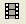
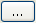

Animationen erstellen
Graph-Animation
Einführung
Um einen Trend in einer Reihe von Diagrammen aufzuzeigen, kann eine Animation bzw. ein kleiner Filmclip als sehr nützlich erweisen, beispielsweise im Rahmen einer Echtzeitanalyse und bei dem Vergleich von grafischen Ergebnissen. Origin bietet Optionen zum manuellen Auswählen von Diagrammen oder programmatischen Aktualisieren von Daten, um Animationen zu erzeugen.
Diagramme manuell als Frame auswählen
Das Hilfsmittel Animation erstellen kann verwendet werden, um manuell eine Reihe von Diagrammfenstern zu erfassen und diese in jeweils einen Frame einer .AVI-Datei zu schreiben.
 |
- Klicken Sie auf die Schaltfläche Animation erstellen  auf der Symbolleiste Standard.
- Geben Sie einen Dateinamen für die erstellte Animation ein und wählen Sie einen geeigneten Speicherort.
- Klicken Sie auf die Schaltfläche Starten, um Diagramme hinzuzufügen.
- Klicken Sie auf die Schaltfläche Hinzufügen, um das aktive Diagramm als neuen Frame zu der Animation hinzuzufügen.
- Klicken Sie auf die Schaltfläche Fertigstellen, um den Erstellungsprozess zu beenden und die Animationsdatei in dem zuvor ausgewählten Speicherort zu speichern.
|
Diagramme programmatisch als Frame aktualisieren
Animationen können mit Hilfe von LabTalk-Skript oder Origin C-Code erstellt werden. Dazu werden zunächst Daten programmatisch berechnet oder aktualisiert. Danach wird das Diagramm bei jedem Schritt der Berechnung als Frame in die Animation eingefügt.
-
 | Beispiele für programmatisch erstellte Animationen, einschließlich Origin-Projekte und Code, stehen in der Animationsgalerie bereit. |
Animation erstellen
Dialog Animation erstellen
Dieser Dialog wird aufgerufen, wenn ein Dateiname und der Speicherort der erstellten Animation zum ersten Mal festgelegt wurden.
Der Text in dem Feld Dateiname zeigt den Dateipfad und den Dateinamen der Animation, die erzeugt wird. Es ist möglich, beides durch direkte Eingabe oder Klicken auf die Schaltfläche Nach Datei durchsuchen  rechts neben dem Textfeld zu bearbeiten.
Es gibt in dem Dialog drei Schaltflächen:
| Einstellungen |
Öffnen Sie den Dialog Animationseinstellungen. |
| Starten |
Klicken Sie auf diese Schaltfläche, um Diagramme als Frames hinzuzufügen. |
| Abbrechen |
Sie schließen den Dialog, ohne die Animation zu erstellen. |
Sobald Sie auf die Schaltfläche Starten klicken, wird der Dialog Animation erstellen minimiert und Sie können anfangen, Diagramme als Frames hinzuzufügen.
Die Titelleiste zeigt die aktuelle Anzahl der Frames/Diagramme, die hinzugefügt wurden. Falls mehr als ein Diagramm hinzugefügt wurde, wird der Name des Diagrammfensters des zuletzt hinzugefügten Diagramm unten in der Titelleiste gezeigt.
Es gibt in dem Dialog drei Schaltflächen:
| Zu erfassendes Diagramm |
Wählen Sie das gewünschte Diagrammfenster aus, das Sie zu der Animation im aktiven Ordner hinzufügen möchten. Standardmäßig ist dieses Feld auf Aktuell gesetzt, so dass Sie direkt auf das Diagrammfenster klicken können, um das hinzugefügte Diagramm auszuwählen. |
| Hinzufügen (oder Q-Taste drücken) |
Das aktive Diagrammfenster wird als aktueller Frame zu der Animation hinzugefügt. Sie können auch die Taste Q verwenden, um den Frame hinzuzufügen. |
| Fertigstellen |
Das Hinzufügen der Diagramme wird beendet und die Animation erzeugt. |
| Abbrechen |
Sie schließen den Dialog, ohne die Animation zu erstellen. |
| Hinweise: Dieser Dialog verfügt über keinen Modus. Sie können zu anderen Ordnern navigieren oder sogar ein neues Origin-Projekt öffnen, um Diagrammfenster zu aktivieren. |
Dialog Animationseinstellungen
Dieser Dialog wird verwendet, um die Animationseigenschaften festzulegen.
| Breite der Animation |
Die Breite der Animation wird in Pixeln festgelegt. Standardwert ist 800. |
| Höhe der Animation |
Die Höhe der Animation wird in Pixeln festgelegt. Standardwert ist 600. |
| Seitenverhältnis beibehalten |
Legen Sie fest, ob das Seitenverhältnis beibehalten werden soll, wenn aus Diagrammen Animationen erstellt werden. |
| Ausrichtung |
Legen Sie die Ausrichtung der Animation fest. Die Standardoption ist Zentrum. Alternativ kann sie auf Oben/links oder Unten/rechts. |
| Frames pro Sekunde |
Die Anzahl der Frames in einer Sekunde wird angezeigt. Standardwert ist 1. Möglich sind Werte zwischen 0,001 und 120. Hinweis: Nur ein paar Komprimierungsmethoden (codecs) unterstützen einen Wert für Frames pro Sekunde kleiner als 1.
|
| Komprimierung |
Die Komprimierungsmethode der erstellten Animation wird festgelegt. Die Standardoption ist Unkomprimiert. Weitere Optionen werden als automatisch erkannte Methoden in der Computerumgebung unterstützt. |